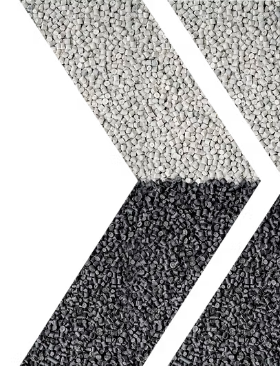

A Kend Polímeros Avançados é sua parceira estratégica em compostos de polipropileno e aditivos de transformação, oferecendo soluções personalizadas a partir de resinas virgens ou recicladas. Dê um passo à frente e entre em contato.

A Kend Polímeros Avançados é especialista em compostos de polipropileno e utilizamos resinas virgens e
sustentáveis para criar soluções personalizadas.
Temos expertise em formulação e processamento, oferecendo soluções inovadoras e tecnologicamente avançadas
que nos colocam à frente da concorrência.
Nossas resinas possuem alto grau de pureza, propriedades mecânicas e alta performance, podendo ser
utilizadas em diversos segmentos de mercado, da mineração ao setor automotivo.
Entre em contato e saiba como podemos transformar seus negócios.
Transformar a maior quantidade possível de plásticos reciclados em compostos de alta performance, fortalecendo a economia circular.
Ser referência na produção de compostos de polipropileno, oferecendo materiais de alta qualidade que atendam aos mais exigentes segmentos de mercado.
Valorizamos pessoas e fomentamos a inovação, desenvolvendo produtos tecnológicos e excepcionais.
Buscamos continuamente a excelência na qualidade dos nossos produtos e serviços, visando a satisfação de nossos clientes e sustentabilidade ambiental.
• Exceder a satisfação dos clientes;
• Melhorar continuamente processos e produtos;
• Atender aos requisitos legais e outros aplicáveis;
• Realizar a melhoria contínua do Sistema de Gestão Integrado (SGI);
• Reduzir o consumo de recursos naturais, emissão de poluentes industriais e garantir a prevenção da poluição.